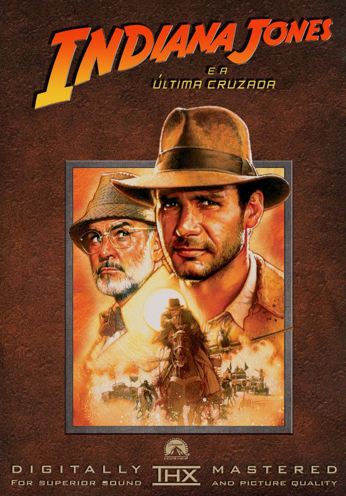
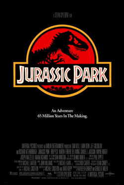

-
Indiana Jones e a Última Cruzada

O arqueólogo Indiana Jones embarca em uma missão perigosa e cheia de aventuras para salvar seu pai, o professor Henry Jones, que foi sequestrado por nazistas e para tentar encontrar o lendário Santo Graal, cálice que Jesus teria usado na Última Ceia. Ver mais...
-
Star Wars: Episódio I - A Ameaça Fantasma

Obi-Wan e seu mentor embarcam em uma perigosa aventura na tentativa de salvar o planeta das garras de Darth Sidious. Durante a viagem, eles conhecem um habilidoso menino e decidem treiná-lo para se tornar um Jedi. Mas o tempo irá revelar que as coisas nem sempre são o que aparentam ser. Ver mais...
-
Avatar

No exuberante mundo alienígena de Pandora vivem os Na'vi, seres que parecem ser primitivos, mas são altamente evoluídos. Como o ambiente do planeta é tóxico, foram criados os avatares, corpos biológicos controlados pela mente humana que se movimentam livremente em Pandora. Ver mais...
-
Guardiões da Galáxia

O aventureiro do espaço Peter Quill torna-se presa de caçadores de recompensas depois que rouba a esfera de um vilão traiçoeiro, Ronan. Para escapar do perigo, ele faz uma aliança com um grupo de quatro extraterrestres. Quando Quill descobre que a esfera roubada possui um poder capaz de mudar os rumos do universo, ele e seu grupo deverão proteger o objeto para salvar o futuro da galáxia. Ver mais...
-
Jurassic Park: Parque dos Dinossauros

Os paleontólogos Alan Grant, Ellie Sattler e o matemático Ian Malcolm fazem parte de um seleto grupo escolhido para visitar uma ilha habitada por dinossauros criados a partir de DNA pré-histórico. O idealizador do projeto e bilionário John Hammond garante a todos que a instalação é completamente segura. Mas após uma queda de energia, os visitantes descobrem, aos poucos, que vários predadores ferozes estão soltos e à caça. Ver mais...